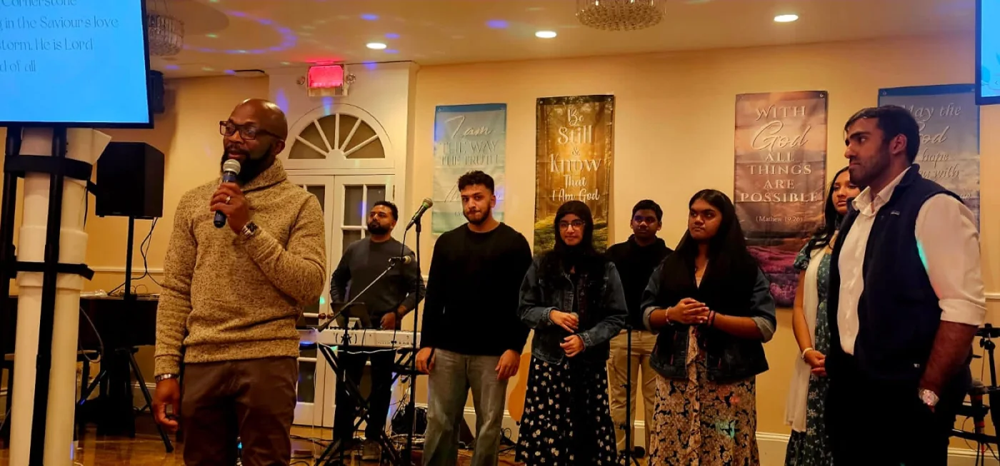
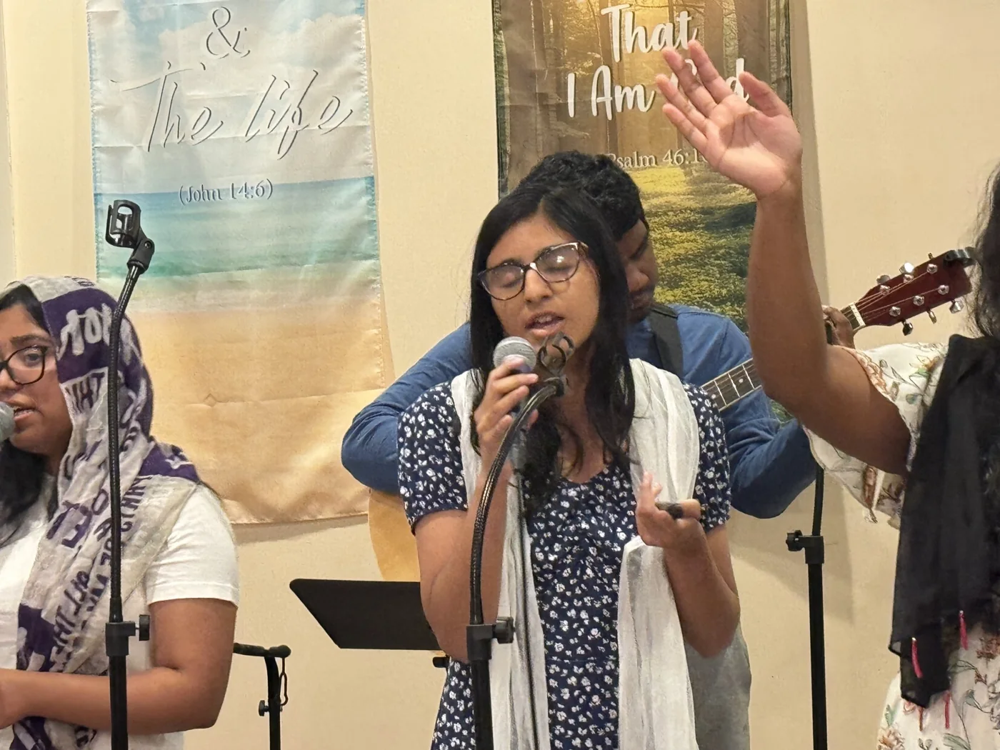
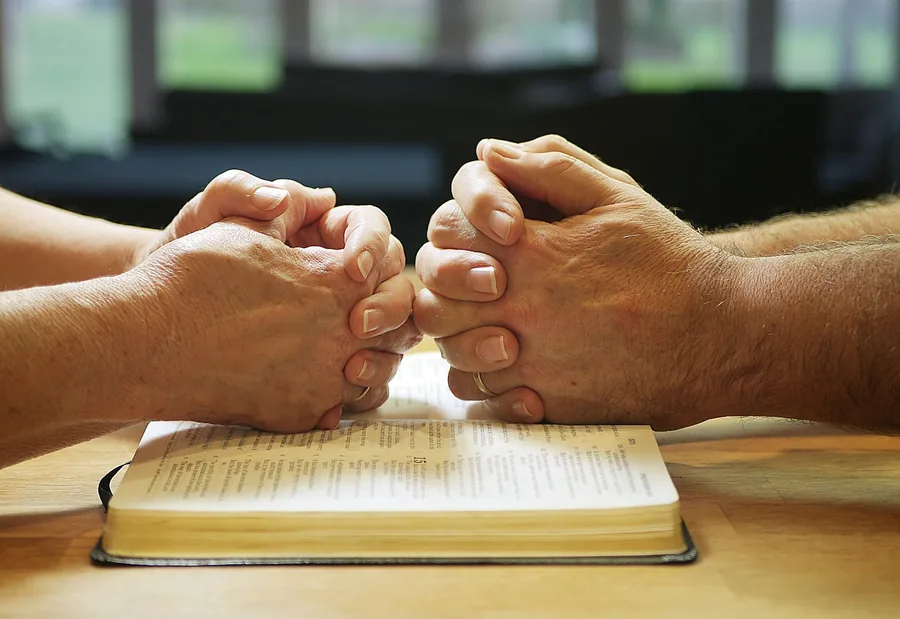
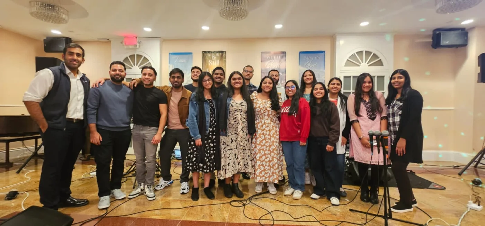
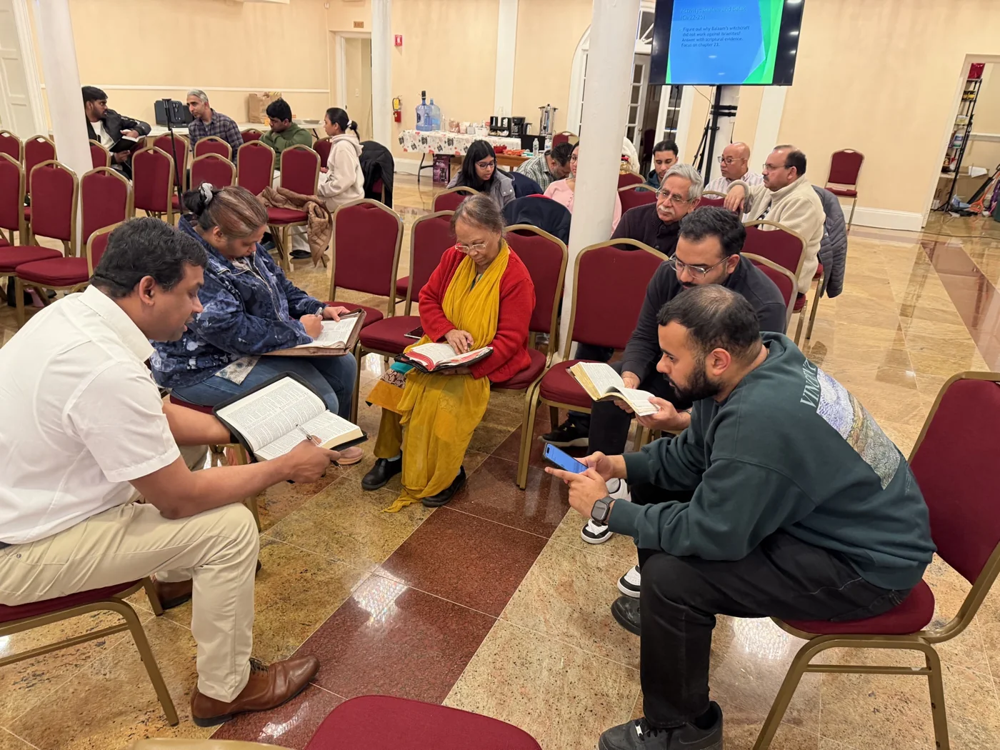
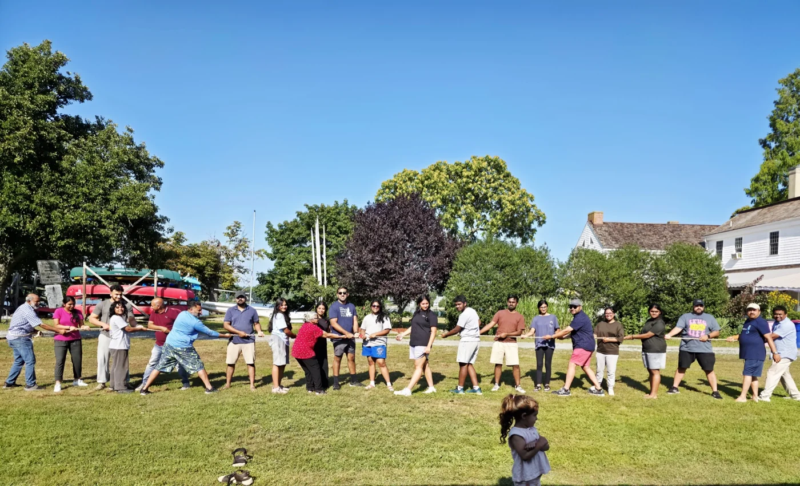

Bethel Worship Center · Bronxville, NY
Come as
you are.
One church family in Bronxville. Worship in English and Malayalam. A place to grow in faith, together.
9:30 AM English / 10:30 AM Malayalam
Lower level of Golden Sword Church
A church in your neighborhood
Join us
this Sunday.
We’re a Pentecostal church in Bronxville, welcoming people from Yonkers and across Westchester. We worship in English and Malayalam, study the Bible, and pray together.
Coming for the first time? We’d love to meet you.
Find your community
Life at Bethel.
Worship, Bible study, prayer, and time together.
Full weekly schedule

Sunday worship
English at 9:30 AM. Malayalam at 10:30 AM.
Bible study online
Open your Bible and join the conversation from home.

Prayer gatherings
Malayalam on Tuesdays. Youth & English on Wednesdays.

Youth at Bethel
Worship, time in the Word, and Friday nights together.

Bible study at Bethel
Read Scripture, ask questions, and learn with one another.
Events & church life
Explore gatherings and moments from life around Bethel.

You’re invited
This week
at Bethel.
Make time for worship, conversation, and prayer. Join us in Bronxville or online.
Full weekly scheduleAll times EasternYour first visit
We’ll see
you here.
10 Tanglewylde AvenueBronxville, NY 10708
Find Bethel on the lower level of Golden Sword Church. Allow a few extra minutes for nearby street or metered parking.
Which service should I come to?
Our English service begins at 9:30 AM and our Malayalam service at 10:30 AM. Choose the language you’re most comfortable with.
Can I bring my children?
Yes. Children are welcome to worship with their families. We don’t currently have a separate nursery or children’s program.
Do I need to sign up?
No registration is needed. Come to the service you’d like to attend.